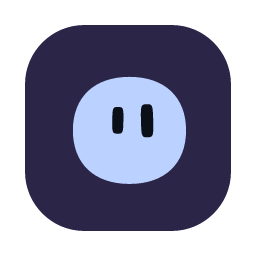

Welcome to AgenticOS
Your agents, a click away: on your desktop, in the menu bar, on a shortcut.
Make this computer ready
Optional permissions for desktop features. You can skip them and enable them later in System Settings.
macOS may require an app restart after enabling screen recording. Agents still ask before using your screen. Microphone and folder access are requested when you use those features.
Where should AgenticOS live?
You can change this later from the menu.
Your organization's server
The address you open AgenticOS at in a browser.
AgenticOS on this computer
A local workspace, managed from your menu bar.
Looking for AgenticOS and Docker…
Setting up AgenticOS
The first download takes a few minutes. You can leave this window open.
- Preparing
- Downloading AgenticOS
- Starting
- Creating your organization